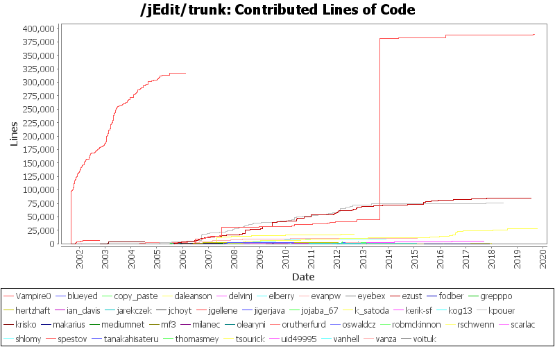
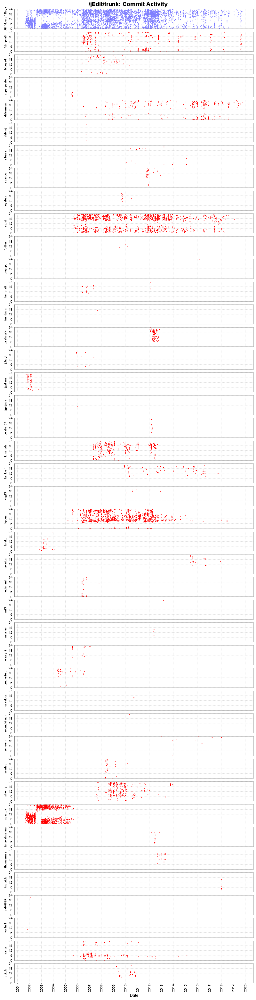
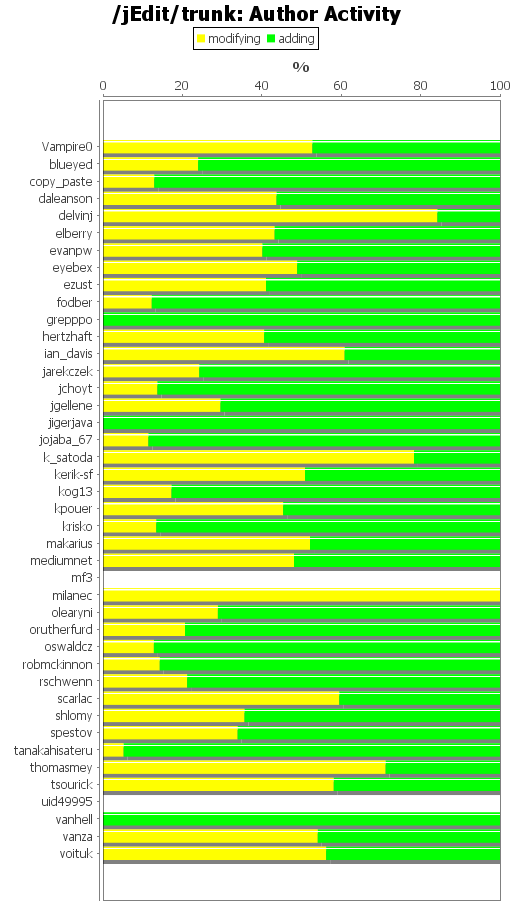
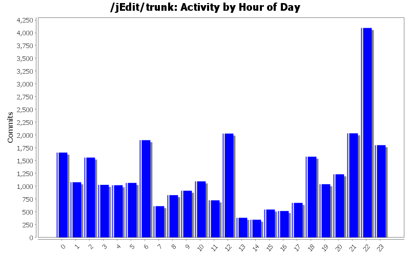
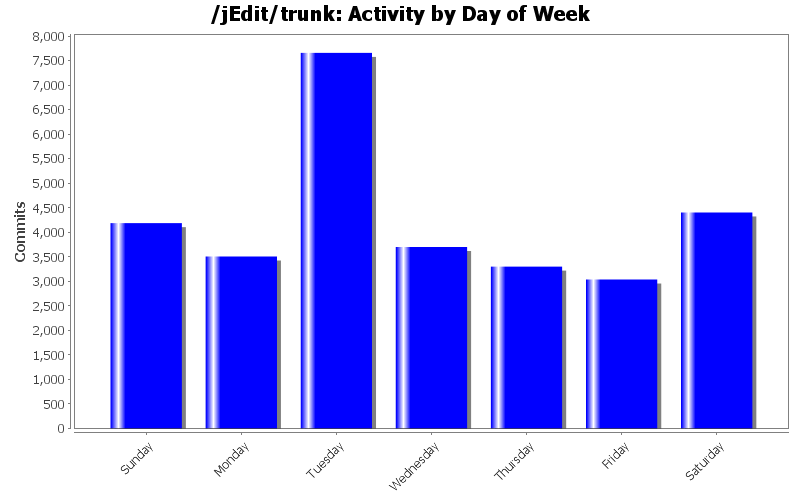

| Author | Author Id | Changes | Lines of Code | Lines per Change |
|---|---|---|---|---|
| Totals | 29642 (100.0%) | 976025 (100.0%) | 32.9 | |
| Vampire0 | Vampire0 | 5176 (17.5%) | 389498 (39.9%) | 75.2 |
| spestov | spestov | 10636 (35.9%) | 317248 (32.5%) | 29.8 |
| ezust | ezust | 5709 (19.3%) | 84700 (8.7%) | 14.8 |
| kpouer | kpouer | 3331 (11.2%) | 75074 (7.7%) | 22.5 |
| daleanson | daleanson | 938 (3.2%) | 28418 (2.9%) | 30.2 |
| k_satoda | k_satoda | 671 (2.3%) | 18131 (1.9%) | 27.0 |
| vanza | vanza | 572 (1.9%) | 10255 (1.1%) | 17.9 |
| shlomy | shlomy | 620 (2.1%) | 8928 (0.9%) | 14.4 |
| jgellene | jgellene | 153 (0.5%) | 5438 (0.6%) | 35.5 |
| kerik-sf | kerik-sf | 259 (0.9%) | 5119 (0.5%) | 19.7 |
| jojaba_67 | jojaba_67 | 69 (0.2%) | 3838 (0.4%) | 55.6 |
| krisko | krisko | 93 (0.3%) | 3785 (0.4%) | 40.6 |
| orutherfurd | orutherfurd | 94 (0.3%) | 3290 (0.3%) | 35.0 |
| jarekczek | jarekczek | 314 (1.1%) | 2820 (0.3%) | 8.9 |
| tanakahisateru | tanakahisateru | 21 (0.1%) | 2727 (0.3%) | 129.8 |
| blueyed | blueyed | 86 (0.3%) | 2507 (0.3%) | 29.1 |
| thomasmey | thomasmey | 139 (0.5%) | 2120 (0.2%) | 15.2 |
| fodber | fodber | 4 (0.0%) | 2062 (0.2%) | 515.5 |
| hertzhaft | hertzhaft | 48 (0.2%) | 1732 (0.2%) | 36.0 |
| evanpw | evanpw | 89 (0.3%) | 1609 (0.2%) | 18.0 |
| mediumnet | mediumnet | 52 (0.2%) | 1083 (0.1%) | 20.8 |
| tsourick | tsourick | 8 (0.0%) | 1041 (0.1%) | 130.1 |
| olearyni | olearyni | 47 (0.2%) | 814 (0.1%) | 17.3 |
| jchoyt | jchoyt | 26 (0.1%) | 755 (0.1%) | 29.0 |
| copy_paste | copy_paste | 16 (0.1%) | 627 (0.1%) | 39.1 |
| scarlac | scarlac | 288 (1.0%) | 581 (0.1%) | 2.0 |
| elberry | elberry | 25 (0.1%) | 419 (0.0%) | 16.7 |
| voituk | voituk | 69 (0.2%) | 372 (0.0%) | 5.3 |
| rschwenn | rschwenn | 12 (0.0%) | 287 (0.0%) | 23.9 |
| makarius | makarius | 40 (0.1%) | 178 (0.0%) | 4.4 |
| milanec | milanec | 3 (0.0%) | 165 (0.0%) | 55.0 |
| oswaldcz | oswaldcz | 3 (0.0%) | 156 (0.0%) | 52.0 |
| grepppo | grepppo | 2 (0.0%) | 117 (0.0%) | 58.5 |
| eyebex | eyebex | 13 (0.0%) | 37 (0.0%) | 2.8 |
| delvinj | delvinj | 3 (0.0%) | 31 (0.0%) | 10.3 |
| kog13 | kog13 | 7 (0.0%) | 29 (0.0%) | 4.1 |
| ian_davis | ian_davis | 1 (0.0%) | 23 (0.0%) | 23.0 |
| robmckinnon | robmckinnon | 1 (0.0%) | 7 (0.0%) | 7.0 |
| vanhell | vanhell | 1 (0.0%) | 3 (0.0%) | 3.0 |
| jigerjava | jigerjava | 1 (0.0%) | 1 (0.0%) | 1.0 |
| uid49995 | uid49995 | 1 (0.0%) | 0 (0.0%) | 0.0 |
| mf3 | mf3 | 1 (0.0%) | 0 (0.0%) | 0.0 |
| Author | Up to 10/2018 | 11/2018 | 12/2018 | 1/2019 | 2/2019 | 3/2019 | 4/2019 | 5/2019 | 6/2019 | 7/2019 | 8/2019 | 9/2019 | 10/2019 |
|---|---|---|---|---|---|---|---|---|---|---|---|---|---|
| Totals | 974051 (100.0%) | 0 (-) | 0 (-) | 4 (100.0%) | 7 (100.0%) | 18 (100.0%) | 0 (-) | 0 (-) | 519 (100.0%) | 55 (100.0%) | 1369 (100.0%) | 1 (100.0%) | 1 (100.0%) |
| Vampire0 | 388128 (39.8%) | 0 (-) | 0 (-) | 0 (0.0%) | 0 (0.0%) | 0 (0.0%) | 0 (-) | 0 (-) | 0 (0.0%) | 0 (0.0%) | 1369 (100.0%) | 1 (100.0%) | 0 (0.0%) |
| spestov | 317248 (32.6%) | 0 (-) | 0 (-) | 0 (0.0%) | 0 (0.0%) | 0 (0.0%) | 0 (-) | 0 (-) | 0 (0.0%) | 0 (0.0%) | 0 (0.0%) | 0 (0.0%) | 0 (0.0%) |
| ezust | 84671 (8.7%) | 0 (-) | 0 (-) | 0 (0.0%) | 7 (100.0%) | 0 (0.0%) | 0 (-) | 0 (-) | 0 (0.0%) | 22 (40.0%) | 0 (0.0%) | 0 (0.0%) | 0 (0.0%) |
| kpouer | 75074 (7.7%) | 0 (-) | 0 (-) | 0 (0.0%) | 0 (0.0%) | 0 (0.0%) | 0 (-) | 0 (-) | 0 (0.0%) | 0 (0.0%) | 0 (0.0%) | 0 (0.0%) | 0 (0.0%) |
| daleanson | 27843 (2.9%) | 0 (-) | 0 (-) | 4 (100.0%) | 0 (0.0%) | 18 (100.0%) | 0 (-) | 0 (-) | 519 (100.0%) | 33 (60.0%) | 0 (0.0%) | 0 (0.0%) | 1 (100.0%) |
| k_satoda | 18131 (1.9%) | 0 (-) | 0 (-) | 0 (0.0%) | 0 (0.0%) | 0 (0.0%) | 0 (-) | 0 (-) | 0 (0.0%) | 0 (0.0%) | 0 (0.0%) | 0 (0.0%) | 0 (0.0%) |
| vanza | 10255 (1.1%) | 0 (-) | 0 (-) | 0 (0.0%) | 0 (0.0%) | 0 (0.0%) | 0 (-) | 0 (-) | 0 (0.0%) | 0 (0.0%) | 0 (0.0%) | 0 (0.0%) | 0 (0.0%) |
| shlomy | 8928 (0.9%) | 0 (-) | 0 (-) | 0 (0.0%) | 0 (0.0%) | 0 (0.0%) | 0 (-) | 0 (-) | 0 (0.0%) | 0 (0.0%) | 0 (0.0%) | 0 (0.0%) | 0 (0.0%) |
| jgellene | 5438 (0.6%) | 0 (-) | 0 (-) | 0 (0.0%) | 0 (0.0%) | 0 (0.0%) | 0 (-) | 0 (-) | 0 (0.0%) | 0 (0.0%) | 0 (0.0%) | 0 (0.0%) | 0 (0.0%) |
| kerik-sf | 5119 (0.5%) | 0 (-) | 0 (-) | 0 (0.0%) | 0 (0.0%) | 0 (0.0%) | 0 (-) | 0 (-) | 0 (0.0%) | 0 (0.0%) | 0 (0.0%) | 0 (0.0%) | 0 (0.0%) |
| jojaba_67 | 3838 (0.4%) | 0 (-) | 0 (-) | 0 (0.0%) | 0 (0.0%) | 0 (0.0%) | 0 (-) | 0 (-) | 0 (0.0%) | 0 (0.0%) | 0 (0.0%) | 0 (0.0%) | 0 (0.0%) |
| krisko | 3785 (0.4%) | 0 (-) | 0 (-) | 0 (0.0%) | 0 (0.0%) | 0 (0.0%) | 0 (-) | 0 (-) | 0 (0.0%) | 0 (0.0%) | 0 (0.0%) | 0 (0.0%) | 0 (0.0%) |
| orutherfurd | 3290 (0.3%) | 0 (-) | 0 (-) | 0 (0.0%) | 0 (0.0%) | 0 (0.0%) | 0 (-) | 0 (-) | 0 (0.0%) | 0 (0.0%) | 0 (0.0%) | 0 (0.0%) | 0 (0.0%) |
| jarekczek | 2820 (0.3%) | 0 (-) | 0 (-) | 0 (0.0%) | 0 (0.0%) | 0 (0.0%) | 0 (-) | 0 (-) | 0 (0.0%) | 0 (0.0%) | 0 (0.0%) | 0 (0.0%) | 0 (0.0%) |
| tanakahisateru | 2727 (0.3%) | 0 (-) | 0 (-) | 0 (0.0%) | 0 (0.0%) | 0 (0.0%) | 0 (-) | 0 (-) | 0 (0.0%) | 0 (0.0%) | 0 (0.0%) | 0 (0.0%) | 0 (0.0%) |
| blueyed | 2507 (0.3%) | 0 (-) | 0 (-) | 0 (0.0%) | 0 (0.0%) | 0 (0.0%) | 0 (-) | 0 (-) | 0 (0.0%) | 0 (0.0%) | 0 (0.0%) | 0 (0.0%) | 0 (0.0%) |
| thomasmey | 2120 (0.2%) | 0 (-) | 0 (-) | 0 (0.0%) | 0 (0.0%) | 0 (0.0%) | 0 (-) | 0 (-) | 0 (0.0%) | 0 (0.0%) | 0 (0.0%) | 0 (0.0%) | 0 (0.0%) |
| fodber | 2062 (0.2%) | 0 (-) | 0 (-) | 0 (0.0%) | 0 (0.0%) | 0 (0.0%) | 0 (-) | 0 (-) | 0 (0.0%) | 0 (0.0%) | 0 (0.0%) | 0 (0.0%) | 0 (0.0%) |
| hertzhaft | 1732 (0.2%) | 0 (-) | 0 (-) | 0 (0.0%) | 0 (0.0%) | 0 (0.0%) | 0 (-) | 0 (-) | 0 (0.0%) | 0 (0.0%) | 0 (0.0%) | 0 (0.0%) | 0 (0.0%) |
| evanpw | 1609 (0.2%) | 0 (-) | 0 (-) | 0 (0.0%) | 0 (0.0%) | 0 (0.0%) | 0 (-) | 0 (-) | 0 (0.0%) | 0 (0.0%) | 0 (0.0%) | 0 (0.0%) | 0 (0.0%) |
| mediumnet | 1083 (0.1%) | 0 (-) | 0 (-) | 0 (0.0%) | 0 (0.0%) | 0 (0.0%) | 0 (-) | 0 (-) | 0 (0.0%) | 0 (0.0%) | 0 (0.0%) | 0 (0.0%) | 0 (0.0%) |
| tsourick | 1041 (0.1%) | 0 (-) | 0 (-) | 0 (0.0%) | 0 (0.0%) | 0 (0.0%) | 0 (-) | 0 (-) | 0 (0.0%) | 0 (0.0%) | 0 (0.0%) | 0 (0.0%) | 0 (0.0%) |
| olearyni | 814 (0.1%) | 0 (-) | 0 (-) | 0 (0.0%) | 0 (0.0%) | 0 (0.0%) | 0 (-) | 0 (-) | 0 (0.0%) | 0 (0.0%) | 0 (0.0%) | 0 (0.0%) | 0 (0.0%) |
| jchoyt | 755 (0.1%) | 0 (-) | 0 (-) | 0 (0.0%) | 0 (0.0%) | 0 (0.0%) | 0 (-) | 0 (-) | 0 (0.0%) | 0 (0.0%) | 0 (0.0%) | 0 (0.0%) | 0 (0.0%) |
| copy_paste | 627 (0.1%) | 0 (-) | 0 (-) | 0 (0.0%) | 0 (0.0%) | 0 (0.0%) | 0 (-) | 0 (-) | 0 (0.0%) | 0 (0.0%) | 0 (0.0%) | 0 (0.0%) | 0 (0.0%) |
| scarlac | 581 (0.1%) | 0 (-) | 0 (-) | 0 (0.0%) | 0 (0.0%) | 0 (0.0%) | 0 (-) | 0 (-) | 0 (0.0%) | 0 (0.0%) | 0 (0.0%) | 0 (0.0%) | 0 (0.0%) |
| elberry | 419 (0.0%) | 0 (-) | 0 (-) | 0 (0.0%) | 0 (0.0%) | 0 (0.0%) | 0 (-) | 0 (-) | 0 (0.0%) | 0 (0.0%) | 0 (0.0%) | 0 (0.0%) | 0 (0.0%) |
| voituk | 372 (0.0%) | 0 (-) | 0 (-) | 0 (0.0%) | 0 (0.0%) | 0 (0.0%) | 0 (-) | 0 (-) | 0 (0.0%) | 0 (0.0%) | 0 (0.0%) | 0 (0.0%) | 0 (0.0%) |
| rschwenn | 287 (0.0%) | 0 (-) | 0 (-) | 0 (0.0%) | 0 (0.0%) | 0 (0.0%) | 0 (-) | 0 (-) | 0 (0.0%) | 0 (0.0%) | 0 (0.0%) | 0 (0.0%) | 0 (0.0%) |
| makarius | 178 (0.0%) | 0 (-) | 0 (-) | 0 (0.0%) | 0 (0.0%) | 0 (0.0%) | 0 (-) | 0 (-) | 0 (0.0%) | 0 (0.0%) | 0 (0.0%) | 0 (0.0%) | 0 (0.0%) |
| milanec | 165 (0.0%) | 0 (-) | 0 (-) | 0 (0.0%) | 0 (0.0%) | 0 (0.0%) | 0 (-) | 0 (-) | 0 (0.0%) | 0 (0.0%) | 0 (0.0%) | 0 (0.0%) | 0 (0.0%) |
| oswaldcz | 156 (0.0%) | 0 (-) | 0 (-) | 0 (0.0%) | 0 (0.0%) | 0 (0.0%) | 0 (-) | 0 (-) | 0 (0.0%) | 0 (0.0%) | 0 (0.0%) | 0 (0.0%) | 0 (0.0%) |
| grepppo | 117 (0.0%) | 0 (-) | 0 (-) | 0 (0.0%) | 0 (0.0%) | 0 (0.0%) | 0 (-) | 0 (-) | 0 (0.0%) | 0 (0.0%) | 0 (0.0%) | 0 (0.0%) | 0 (0.0%) |
| eyebex | 37 (0.0%) | 0 (-) | 0 (-) | 0 (0.0%) | 0 (0.0%) | 0 (0.0%) | 0 (-) | 0 (-) | 0 (0.0%) | 0 (0.0%) | 0 (0.0%) | 0 (0.0%) | 0 (0.0%) |
| delvinj | 31 (0.0%) | 0 (-) | 0 (-) | 0 (0.0%) | 0 (0.0%) | 0 (0.0%) | 0 (-) | 0 (-) | 0 (0.0%) | 0 (0.0%) | 0 (0.0%) | 0 (0.0%) | 0 (0.0%) |
| kog13 | 29 (0.0%) | 0 (-) | 0 (-) | 0 (0.0%) | 0 (0.0%) | 0 (0.0%) | 0 (-) | 0 (-) | 0 (0.0%) | 0 (0.0%) | 0 (0.0%) | 0 (0.0%) | 0 (0.0%) |
| ian_davis | 23 (0.0%) | 0 (-) | 0 (-) | 0 (0.0%) | 0 (0.0%) | 0 (0.0%) | 0 (-) | 0 (-) | 0 (0.0%) | 0 (0.0%) | 0 (0.0%) | 0 (0.0%) | 0 (0.0%) |
| robmckinnon | 7 (0.0%) | 0 (-) | 0 (-) | 0 (0.0%) | 0 (0.0%) | 0 (0.0%) | 0 (-) | 0 (-) | 0 (0.0%) | 0 (0.0%) | 0 (0.0%) | 0 (0.0%) | 0 (0.0%) |
| vanhell | 3 (0.0%) | 0 (-) | 0 (-) | 0 (0.0%) | 0 (0.0%) | 0 (0.0%) | 0 (-) | 0 (-) | 0 (0.0%) | 0 (0.0%) | 0 (0.0%) | 0 (0.0%) | 0 (0.0%) |
| jigerjava | 1 (0.0%) | 0 (-) | 0 (-) | 0 (0.0%) | 0 (0.0%) | 0 (0.0%) | 0 (-) | 0 (-) | 0 (0.0%) | 0 (0.0%) | 0 (0.0%) | 0 (0.0%) | 0 (0.0%) |
| uid49995 | 0 (0.0%) | 0 (-) | 0 (-) | 0 (0.0%) | 0 (0.0%) | 0 (0.0%) | 0 (-) | 0 (-) | 0 (0.0%) | 0 (0.0%) | 0 (0.0%) | 0 (0.0%) | 0 (0.0%) |
| mf3 | 0 (0.0%) | 0 (-) | 0 (-) | 0 (0.0%) | 0 (0.0%) | 0 (0.0%) | 0 (-) | 0 (-) | 0 (0.0%) | 0 (0.0%) | 0 (0.0%) | 0 (0.0%) | 0 (0.0%) |




